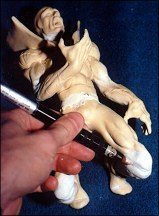
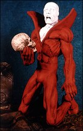

For this issue, I am going to show how I repositioned a solid resin figure of a DC comic character.. Deadman. The repositioning of a resin kits takes a little more time and thought, because to do this I have to cut sections out of the figure and resculpt new sections in. The whole idea of taking a $100 or $200 resin kit and cutting it apart to modify it can be more than a little intimidating when you don't know if the kit will turn out as a piece of art or a piece of junk. So I will show and explain to you what I did with my Deadman kit and hopefully it will get you motivated.
First, always start by cleaning the kit of any leftover mold release and sand any mold lines. The main figure came in four pieces which consist of the legs and torso (which was one piece), two lower arm sections, and the head. When built straight from the box, he is positioned on a tombstone base looking as if he is going to start doing jumping jacks. I decided I wanted a more dramatic pose. After studying the kit and seeing how I could reposition it without changing the proportions of the figure, I decided I wanted to put Deadman in a kneeling position next to the tombstone. I also wanted him holding a skull in his right hand (like a scene from Hamlet).


To accomplish this task, I first had to cut the figure apart (scary). I cut the lower legs away from the torso and then again at the knees (cutting just under the knee caps). Next, I cut the right arm off at the elbow. I also cut the toes off the feet so they could be repositioned to give the figure a more natural look when finished. The cut at the waist was needed so that I could reposition the upper body slightly forward.
 Next, I am going to cut some resin from
the parts I just separated to make room for
the repositioning and resculpting. First, I start
with the neck. I am tipping the head forward
slightly so I will need to remove some resin
from the front of the neck. To do this I measured
down the front of the neck a 1/4" and marked it. Then I used my Exacto
saw and cut from the mark on the front of the neck through to the top of the
back of the neck, removing a "V" shaped wedge. Next, I repeated the above
described process at the waist just under the belt line to allow the upper torso
to be moved forward. For the legs I had to cut about a 1/2" "V" shaped wedge
off the back of the knees. This would allow me to have some
"working room" when repositioning the legs to a 45 degree
angle. For the right arm I cut a 1/2" "V" shaped wedge off
the inside of the elbow. This was to allow room for the modifications
I planned, which was to make the right arm bend
at a 90 degree angle.
Next, I am going to cut some resin from
the parts I just separated to make room for
the repositioning and resculpting. First, I start
with the neck. I am tipping the head forward
slightly so I will need to remove some resin
from the front of the neck. To do this I measured
down the front of the neck a 1/4" and marked it. Then I used my Exacto
saw and cut from the mark on the front of the neck through to the top of the
back of the neck, removing a "V" shaped wedge. Next, I repeated the above
described process at the waist just under the belt line to allow the upper torso
to be moved forward. For the legs I had to cut about a 1/2" "V" shaped wedge
off the back of the knees. This would allow me to have some
"working room" when repositioning the legs to a 45 degree
angle. For the right arm I cut a 1/2" "V" shaped wedge off
the inside of the elbow. This was to allow room for the modifications
I planned, which was to make the right arm bend
at a 90 degree angle.
When I decided to reposition the toes of both feet, I again used a "V" cut to remove resin from the top of the foot so that the toes could be moved in an upward position. With the toes I did not know how much I needed to remove, so l started with a small cut. This allowed me the option of removing more if I needed to. I continued to do this until I had the toes repositioned as I wanted them.
(NOTE: ALL INITIAL CUTS CAN BE ROUGH, I TEST FIT THEM FIRST THEN GO BACK AND CLEAN THE SURFACES SO THEY FIT TOGETHER PROPERLY.)
Now that all the parts were cut and trimmed, I was ready to start pinning and reassembling the figure.
For the toes, waist and neck I just pinned these parts together as I do for any other kit. (NOTE: I did not glue the waist joint at this point, because it allows for easier handling and working.) For the knees and right arm the pinning is going to be a little trickier. First I used longer pins than were needed. For the knees I used 2" pins that were made from a clothes hanger. I then drilled about a 1/2" into the upper and lower legs and placed the pins into them. This gave me a 1" gap between the leg sections. This I needed so I could resculpt the knees that I had cut out. Next I bent the pins into a 45 degree angle. To glue these pins into the legs I used a five minute epoxy because I wanted the extra strength at these weak joints. For the right elbow I repeated the above process with a 2 inch pin, but this pin will be bent into a 90 degree angle. The wire between the sections of legs and right arm acted as an armature to apply putty to for resculpting the sections I was missing.

Next I started the resculpting process. (Now I am definitely not John Dennett, so you will have to bear with me on this.) I started by applying epoxy putty around the wires in the right arm and legs and allowing it to dry. I then applied another layer of epoxy putty and built it up to the size of the surrounding area. With the putty still soft I roughed in the shape of the right elbow and both knees (NOTE: use good reference material to make sure that the elbow and knees look accurate). I also tried to match the surface texture and style of the piece so that the areas I was resculpting blended in well with the rest of the kit.
 After the putty I applied had plenty of time to dry and cure (I let it sit 24 hours), I used my Dremel tool with a stone sanding bit for smoothing and shaping of the areas. After that process was finished I followed it up with 400 grit sand papeer and some hand sanding.
Up until this point I had been working with the top and bottom halves separately, so I attached the upper torso to the lower body. After pinning and gluing, applying putty at the seam and blending it in with the rest of the waist, Deadman was complete. As a final touch to the figure I added a full skull (in the same scale) in Deadman's right hand.
 Lastly there were a couple
of areas on the base that I
needed to correct. First I had
to fill in the two foot print
indentations that Deadman
original stood in. I filled them
with epoxy putty and blended
in the surface texture. Next I
had to use my Dremel tool
and cut out two new spots
where Deadman's toes would
rest. To do this I traced a pattern from Deadman's toes
onto the base and removed that area with a cutting bit
in my Dremel tool.
Lastly there were a couple
of areas on the base that I
needed to correct. First I had
to fill in the two foot print
indentations that Deadman
original stood in. I filled them
with epoxy putty and blended
in the surface texture. Next I
had to use my Dremel tool
and cut out two new spots
where Deadman's toes would
rest. To do this I traced a pattern from Deadman's toes
onto the base and removed that area with a cutting bit
in my Dremel tool.
 Now the figure of Deadman and the base are complete and ready for priming and painting.
I know how intimidating it is to cut apart a figure kit that you just saved two months to purchase, but I think if you take your time and give it a try you will be pleased with your results. I hope that this article will encourage some of you to try and modify your kits. GOOD LUCK !!!
A final note: Due to the sculpting and position of some kits, not all figures can be repositioned without changing the proportions of the figures, so study the figure well before cutting it apart.
If you are interested in the Deadman kit contact:
If you have any comments, questions or suggestions for me, please send them to:
Originally published, as black and white, in
KitBuilders Magazine.
Reprinted here, in color, with permission. Thanks, KitBuilders!
The Gremlins in the Garage webzine is a production of Firefly Design. If you have any questions or comments please get in touch.
Copyright © 1994-1997 Firefly Design.